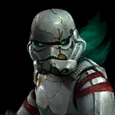
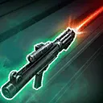
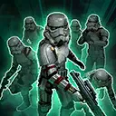

Night trooper
A relentless Attacker who spreads Blight among their foes

A relentless Attacker who spreads Blight among their foes

Deal Physical damage to target enemy and inflict Night Trooper with a stack of Blight, which can't be copied, dispelled, or resisted, until the end of the encounter. If this attack scores a critical hit, inflict Healing Immunity for 1 turn. If Night Trooper has Blight at the start of this attack, inflict Speed Down on the target enemy for 1 turn, which can't be resisted, and remove 10% Turn Meter.
Blight: -100% Health Steal; this character takes bonus True damage whenever they lose Turn Meter from an enemy, which can't be evaded and can't defeat them; remove all stacks of Blight when this character recovers to full health

Deal Physical damage to all enemies and Night Trooper gains Alert for 2 turns, which can't be copied. The enemy with the least Turn Meter is Stunned and inflicted with Vulnerable for 1 turn, and remove 5% Turn Meter from all other enemies. Call target other ally to assist.
Alert: Whenever an ally gains bonus Turn Meter while not at 100% Turn Meter, this character gains 10% Turn Meter (once per turn); this character assists whenever an ally uses a Special ability
Deal Physical damage and inflict the target enemy with a stack of Blight, which can't be copied or dispelled, until the end of the encounter for each stack of Blight on Night Trooper (max 10). Then, remove 100% Turn Meter from target enemy. All enemies are inflicted with Critical Chance Down for 2 turns.
Night Trooper has +35% Potency. Whenever Night Trooper is damaged, they gain 10% Offense (stacking) and 5 Speed (stacking, max 100) for 1 turn or until they are critically hit. Whenever an enemy recovers Health, Night Trooper recovers 100% Health. Enemies can't recover Health from Health Steal when targeting Night Trooper. At the start of Night Trooper's turn, they gain +10% Critical Damage and Defense Penetration per stack of Blight for 1 turn. Whenever Night Trooper reaches 5 stacks of Blight, they gain Frenzy for 2 turns.
Omicron Boost : While in Grand Arenas: Night Trooper has +100% Max Health and +35 Speed. Night Trooper is immune to Turn Meter reduction. If the ally in the Leader slot is Imperial Remnant, inflict a stack of Blight until the end of the encounter at the start of each Imperial Remnant ally's turn to a random enemy. Whenever an enemy is inflicted with Blight this way, reduce the cooldown of Share My Suffering by 1.